HSK 1–6 · iPhone
Every official HSK word. A few at a time, every day.
A focused daily-vocabulary app for HSK exam takers and serious Chinese learners. The complete word list, taught properly — plus a 124-lesson grammar path, quizzes that test you three ways, and review timed to when you'd forget. No curated subset, no ads, no accounts.
No account, ever
No sign-up, no email. Open the app and start.
No ads, no tracking
No third-party analytics, no tracking SDKs.
Your iCloud, not our server
Progress syncs privately across your own devices.
All six levels, from day one
HSK 1
Free
HSK 2
Free
HSK 3
HSK 4
HSK 5
HSK 6
Daily habit, real progress
- A handful of new words a day — never a giant deck. Each card asks one honest question: keep this word in your reviews, or retire it?
- Watch your streak grow, and earn a full-screen graduation moment every time you finish a level, HSK 1 through HSK 6
- Home Screen and Lock Screen widgets put today's word one glance away
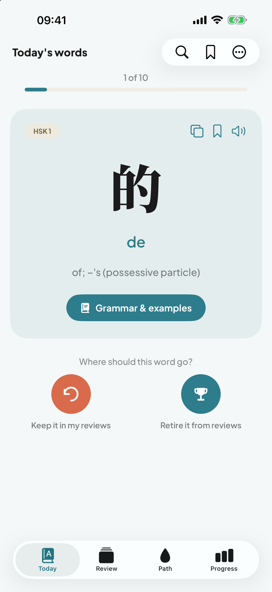
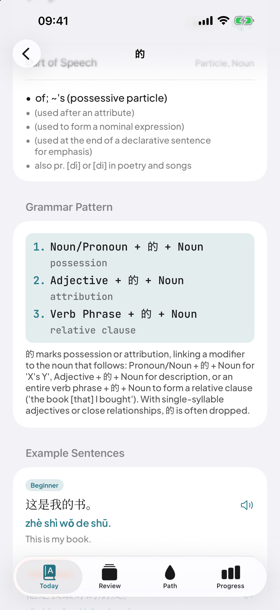
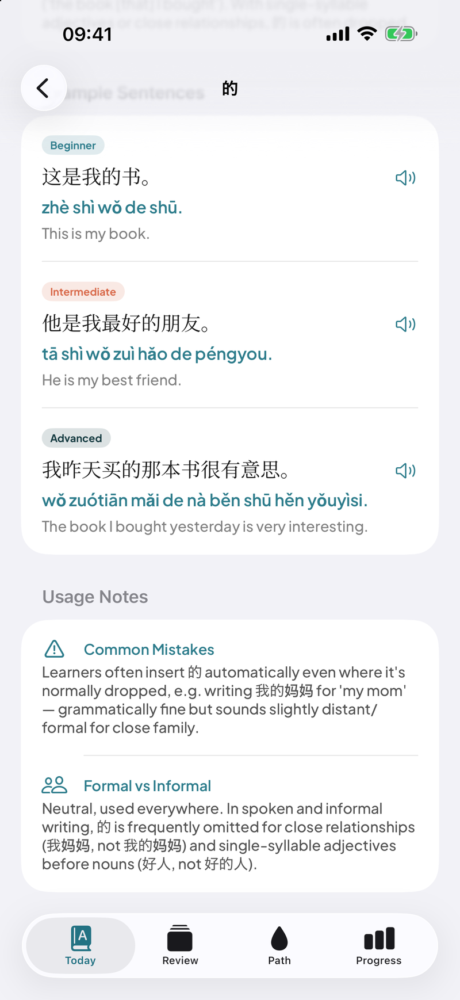
Every word comes with the grammar
- Grammar patterns, usage notes, and example sentences from beginner to advanced — written for all 4,991 words, each sentence one tap from being read aloud
- Common Mistakes come first: the exact errors learners really make, like slipping 的 in where native speakers drop it
- Plain-English explanations instead of linguistics jargon — and dictionary errors that trip up other apps cross-checked and fixed
A grammar path from HSK 1 to HSK 6
- 124 guided lessons that teach how Chinese really works — 是, 了, 把, 虽然…但是 — one construction at a time, in an order that makes sense
- Every lesson teaches the pattern, drills it with real exercises, then recaps what you can now say. Finished lessons grow into a trail of droplets you can look back on
- Easy-to-confuse pairs — 才 vs 就, 又 vs 再, 把 vs 被 — are taught side by side so the difference finally clicks
- The first 23 lessons are free. The rest come with Premium
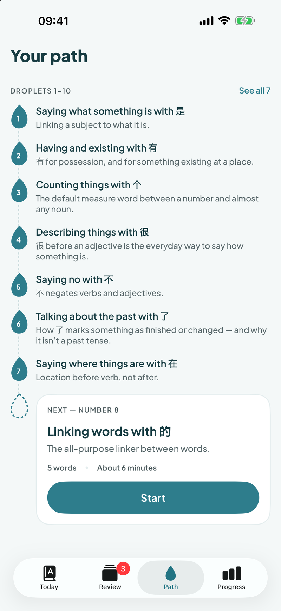
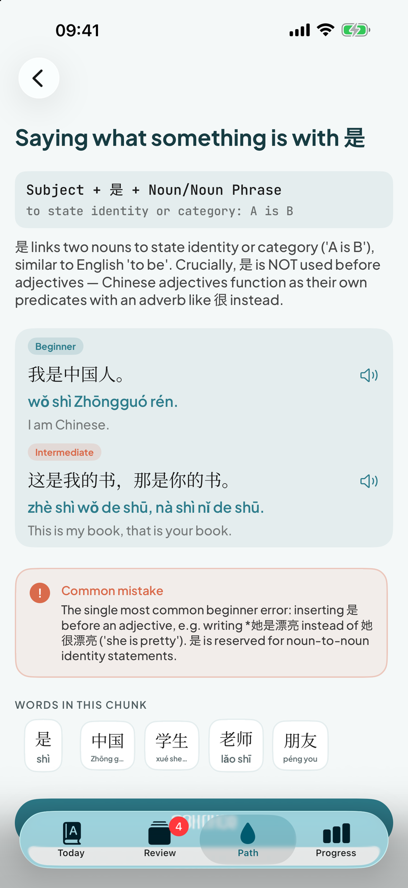
Quizzed three ways, timed so words stick
- Sentence Builder: rebuild a real sentence from hanzi + pinyin tiles, with tempting decoys mixed in
- Listening: hear the word, never see it, and pick the meaning by ear alone
- Meaning and pinyin quizzes test the word itself — including the tone you're most likely to forget
- Spaced review that adapts: words you keep nailing drift out from 1 to 3 to 7 to 16 to 35 days, and a slip brings them straight back
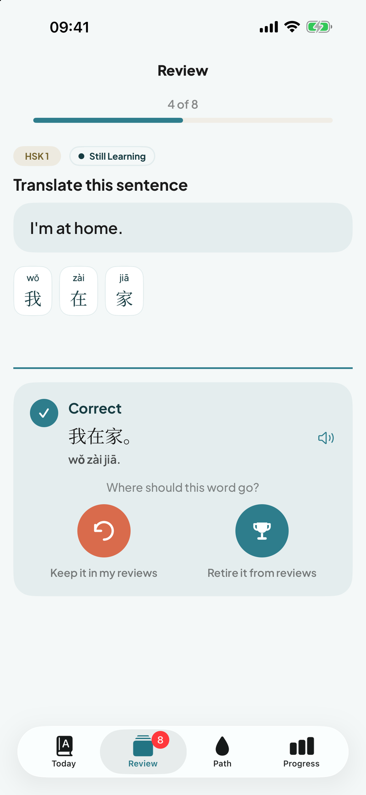
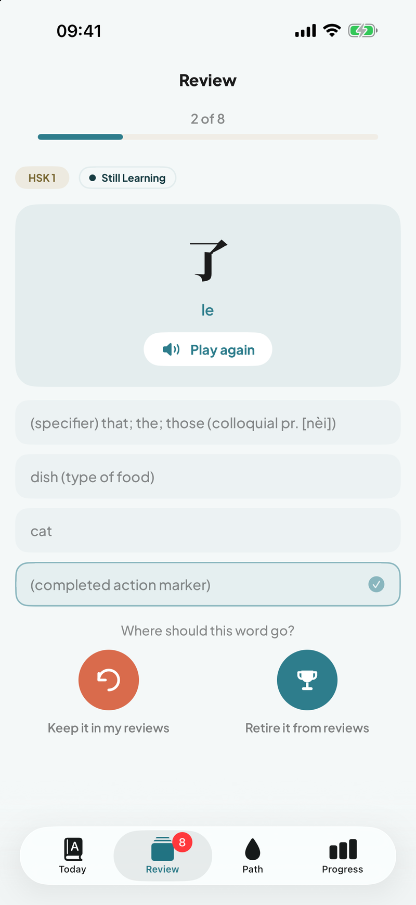
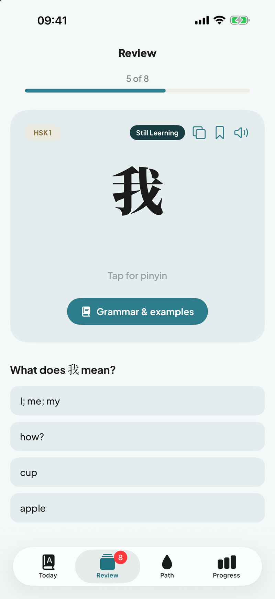
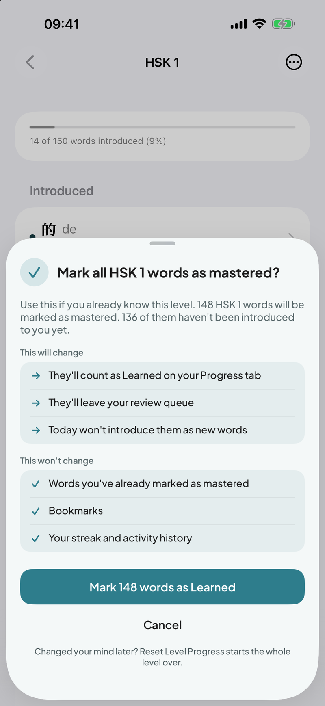
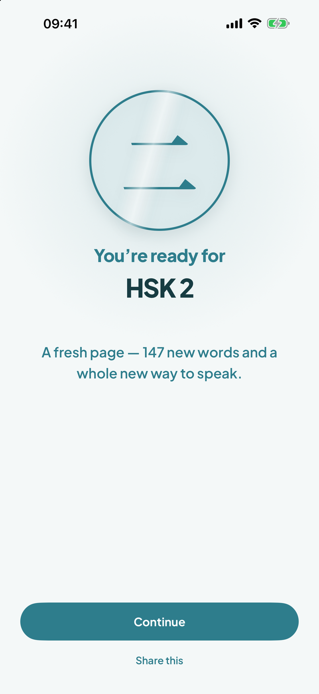
Already know the basics? Start where you are.
- Mark a whole HSK level as mastered in one tap — with a clear preview of exactly what will and won't change first (Premium)
- Finish a level for real and you get a full-screen graduation, with the next level ready and waiting
- Changed your mind? Reset a level any time — your bookmarks and streak stay untouched
Free to start, Premium when you're ready
HSK 1 and HSK 2 — the first ~300 words most beginners need — are free, forever.
Free
HSK 1 & HSK 2
About 300 words, free forever, plus the first 23 grammar lessons — no account needed.
Premium
HSK 3–6 unlocked
Every HSK 3–6 word, the full grammar path, extra daily batches, and a detailed progress breakdown by level.
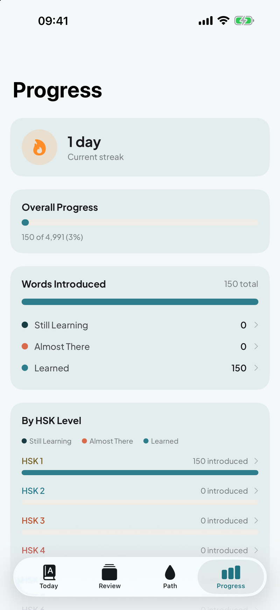